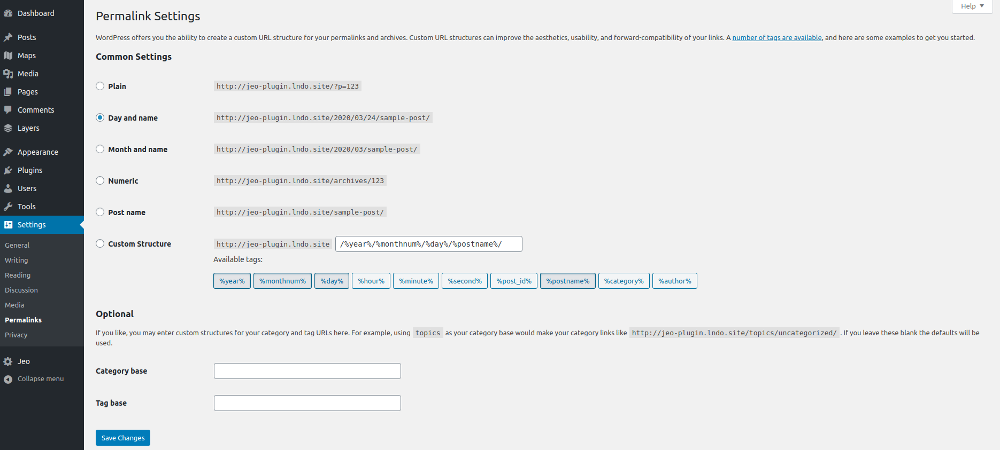

Embedding a map
JEO plugin allows a map to be inserted into a post by pasting a link on the editor. This is what is called Embed map and it's very easy to be done.
When editing a Map, one of the setting panels is Status & Visibility. There you can find the embed URL of that specific map.

Copying this link and pasting on the post editor will result on an embed map.
Warning: If your post displays a Not Found error, do the following steps:
- Go to Wordpress Dashboard > Settings > Permalinks
- Change the Common Settings (you may change to a different setting and then change back to the original) and click on
Save Changes

Now you should be able to see the embed maps with no problems.